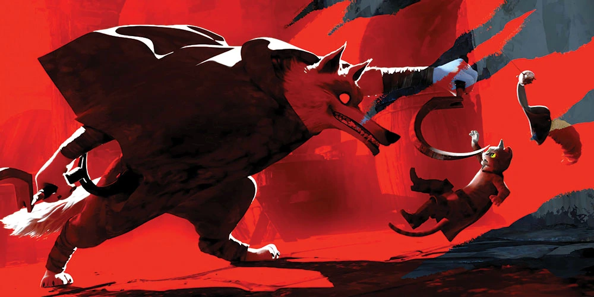

Welcome to Dewside
Log of Oddie's Thoughts

3:17 pm; april 2nd, 2024
i founded a furry convention and it went really welluhhhhh watch the recap here maybe???
maybe i should write up a whole thing about this lol. 13 year old oddie would be very proud of me
3:17 pm; april 2nd, 2024
WHOOPSIES, A YEAR HAS PASSEDi've been hella busy over the last year. i graduated school and moved to the desert, worked at a really cool dinosaur museum as lead educator, fursuited for the first time (it was SO fun and i have my own suit now!) lost my job because of the recession, moved back up north, worked at an aquarium for like 2 months then quit because it sucked so bad (their turnover rate in the education dept is THREE MONTHS on average-- hello?! in 2023 they went thru about 100 employees in that dept... yikes), was unemployed for a bit, and now i have a really fun job as an aide at an elementary school!
5:26 pm; march 30th, 2023
i kinda want to make a wlw zine5:09 pm; march 23rd, 2023
i have been officially told i have adhd
1:35 pm; march 13th, 2023
i really should get back into editing this site. i almost wanna do an overhaul? i feel like my tastes are sorta different atm.i recently told bon that i didn't think i hyperfixated on things. she laughed in my face. it's my little pony. i am hyperfixated on my little pony
12:00 am; february 14th, 2023 (valentine's)
wanna be yours!!2:06 pm; january 25th, 2023 (wednesday)
i finished the good place last night and cried. i watched it all within a week!starting therapy tomorrow, wish me luck!
ALSO, IF YOU HAVEN'T SEEN THE NEW PUSS IN BOOTS MOVIE, DROP EVERYTHING AND SEE IT IMMEDIATELY. YOU DON'T NEED TO HAVE SEEN A SINGLE SHREK MOVIE IN YOUR LIFE FOR IT TO BLOW YOU AWAY. GO SUPPORT THIS MASTERPIECE. 
2:14 pm; january 18th, 2023 (wednesday)
wiped the page :) new semester, new start.on top of that, my last semester! i will graduate with a bachelor's in anthropology this spring :)